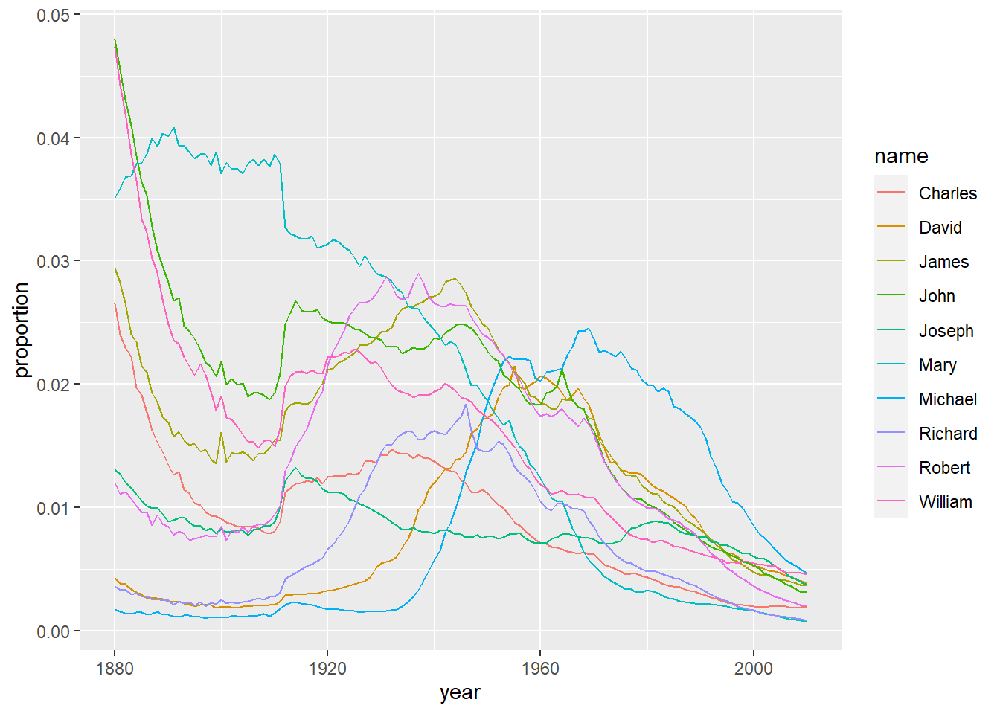
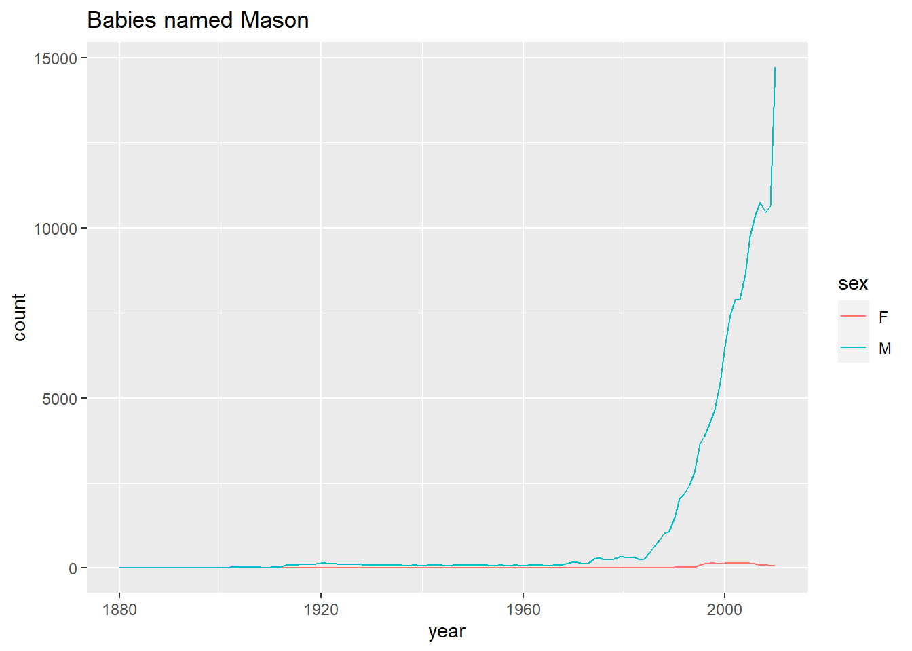

We will be loading a dataset of American names from the years 1880 to 2010. (This data set aims to be representative of the true U.S. population.) We will use this dataset to explore the popularity of names and changes in popularity.
names <- read_csv("SSA-longtail-names.csv",
col_types = cols(X1 = col_skip(), sex = col_character()))## New names:
## * `` -> ...1## Warning: The following named parsers don't match the column names: X1names$sum = names %>% select(`1880`:`2010`) %>% rowSums()
names_prop = names %>%
pivot_longer(`1880`:`2010`, names_to = "year", values_to = "count")
names_prop %>%
mutate(year = as.numeric(year)) %>% group_by(year) %>%
mutate(annual_sum = sum(count), proportion = count/annual_sum)## # A tibble: 12,857,388 x 8
## # Groups: year [131]
## ...1 name sex sum year count annual_sum proportion
## <dbl> <chr> <chr> <dbl> <dbl> <dbl> <dbl> <dbl>
## 1 1 Mary F 4103935 1880 7065 201486 0.0351
## 2 1 Mary F 4103935 1881 6919 192703 0.0359
## 3 1 Mary F 4103935 1882 8149 221538 0.0368
## 4 1 Mary F 4103935 1883 8012 216954 0.0369
## 5 1 Mary F 4103935 1884 9217 243466 0.0379
## 6 1 Mary F 4103935 1885 9128 240858 0.0379
## 7 1 Mary F 4103935 1886 9891 255323 0.0387
## 8 1 Mary F 4103935 1887 9888 247395 0.0400
## 9 1 Mary F 4103935 1888 11754 299488 0.0392
## 10 1 Mary F 4103935 1889 11649 288959 0.0403
## # ... with 12,857,378 more rowsWe have loaded the data and used pivot longer to obtain tidy data. See the sample above starting with Mary.
names_prop %>%
mutate(year = as.numeric(year)) %>% group_by(year) %>%
mutate(annual_sum = sum(count),
proportion = count/annual_sum) %>% top_n(10, sum) %>%
ggplot(aes(x = year, y = proportion, color = name)) + geom_line()
Here we see that the ratio of the total population that the top ten names hold has decreased over time. This means that Americans have been naming their children with increasing diversity over time.
names_prop %>%
mutate(year = as.numeric(year)) %>% group_by(year) %>%
mutate(annual_sum = sum(count), proportion = count/annual_sum) %>%
filter(name == "Mason") %>%
ggplot(aes(x = year, y = count, col = sex)) +
geom_line() + labs(title = "Babies named Mason")
It appears the name Mason exploded in popularity in the 1980’s. The true reason for this is unknown, but it could be due to renewed interest in the freemason society.
We will now scour the data for the biggest one year changes in name popularity.
names_prop %>% group_by(name, sex) %>% mutate(prevcount = lag(count)) %>%
mutate(growth_factor = count/prevcount) %>%
mutate(difference = count-prevcount) %>%
filter(prevcount > 5000) %>% arrange(desc(growth_factor))## # A tibble: 12,039 x 9
## # Groups: name, sex [504]
## ...1 name sex sum year count prevcount growth_factor difference
## <dbl> <chr> <chr> <dbl> <chr> <dbl> <dbl> <dbl> <dbl>
## 1 5518 Debra F 549898 1951 17045 6185 2.76 10860
## 2 61584 Nicholas M 847367 1978 16344 6067 2.69 10277
## 3 61792 Jason M 991561 1969 16498 7157 2.31 9341
## 4 7250 Ashley F 816948 1983 33280 14844 2.24 18436
## 5 1652 Cindy F 253906 1957 20248 9987 2.03 10261
## 6 18682 Brittany F 353486 1985 15433 7660 2.01 7773
## 7 61416 Robert M 4767995 1912 12835 6525 1.97 6310
## 8 2181 Jacqueline F 411757 1961 10978 5651 1.94 5327
## 9 61410 Charles M 2335387 1912 11072 5726 1.93 5346
## 10 499 Deborah F 737810 1948 11247 5831 1.93 5416
## # ... with 12,029 more rowsThe name that grew as a percent the most (with at least 5000 babies of the same name in the prior year) was Debra. In 1951 the amount of Debra babies grew from 6185 to 17045.
names_prop %>% group_by(name, sex) %>% mutate(prevcount = lag(count)) %>%
mutate(growth_factor = count/prevcount) %>% mutate(difference = count-prevcount) %>%
filter(prevcount > 5000) %>% arrange(growth_factor)## # A tibble: 12,039 x 9
## # Groups: name, sex [504]
## ...1 name sex sum year count prevcount growth_factor difference
## <dbl> <chr> <chr> <dbl> <chr> <dbl> <dbl> <dbl> <dbl>
## 1 18682 Brittany F 353486 2001 2929 5176 0.566 -2247
## 2 61495 Warren M 170805 1922 4482 7797 0.575 -3315
## 3 11147 Brooke F 171659 1982 3149 5329 0.591 -2180
## 4 18682 Brittany F 353486 2000 5176 7940 0.652 -2764
## 5 61409 James M 5049727 1901 4735 7246 0.653 -2511
## 6 61411 George M 1443869 1901 3609 5405 0.668 -1796
## 7 153 Christine F 581689 1953 11798 17531 0.673 -5733
## 8 17689 Latoya F 45301 1985 3404 5048 0.674 -1644
## 9 12157 Jaime F 49138 1978 4002 5903 0.678 -1901
## 10 4270 Chelsea F 151211 1994 7715 11289 0.683 -3574
## # ... with 12,029 more rowsThe name that shrank as a percent the most (with at least 5000 babies of the same name in the prior year) was Brittany. In 2001 the amount of Brittany babies shrank from 5176 to 2929. Interestingly, Britney Spears’ popularity may have hit a crescendo that year, after performing in the Super Bowl Halftime Show in January (alongside NSYNC and Aerosmith). This warrants further analysis!
names_brittany = names_prop %>% filter(name == "Brittany") %>%
filter(year > 1995) %>%
mutate(Britney1 = (case_when(year > 1995 & year < 2001 ~"0-before SSBXXXV",
year >= 2001 & year < 2006 ~ "1-After SSBXXXV")))
summary(lm(count ~ Britney1, data = names_brittany))##
## Call:
## lm(formula = count ~ Britney1, data = names_brittany)
##
## Residuals:
## Min 1Q Median 3Q Max
## -4833.1 -1879.3 -299.6 1281.7 8961.9
##
## Coefficients:
## Estimate Std. Error t value Pr(>|t|)
## (Intercept) 4833 1261 3.833 0.00122 **
## Britney11-After SSBXXXV -3932 1783 -2.205 0.04072 *
## ---
## Signif. codes: 0 '***' 0.001 '**' 0.01 '*' 0.05 '.' 0.1 ' ' 1
##
## Residual standard error: 3988 on 18 degrees of freedom
## (10 observations deleted due to missingness)
## Multiple R-squared: 0.2126, Adjusted R-squared: 0.1689
## F-statistic: 4.861 on 1 and 18 DF, p-value: 0.04072We are comparing the five years before to the five years after. From running this simple categorical regression, we see that after Super Bowl XXXV, there was a significant precipitous drop in the amount of babies named Brittany. What about the specific spelling that Britney Spears uses? Could it be that after 2001, mothers who wanted to name their children “Brittany” decided to change the spelling to match Britney Spears?
names_britney = names_prop %>% filter(name == "Britney") %>%
filter(year > 1995) %>%
mutate(Britney2 = (case_when(year > 1995 & year < 2001 ~"0-before SSBXXXV",
year >= 2001 & year < 2006 ~ "1-After SSBXXXV")))
summary(lm(count ~ Britney2, data = names_britney))##
## Call:
## lm(formula = count ~ Britney2, data = names_britney)
##
## Residuals:
## Min 1Q Median 3Q Max
## -578.4 -563.1 -280.7 366.0 1823.6
##
## Coefficients:
## Estimate Std. Error t value Pr(>|t|)
## (Intercept) 578.4 229.8 2.517 0.0215 *
## Britney21-After SSBXXXV -20.4 325.0 -0.063 0.9506
## ---
## Signif. codes: 0 '***' 0.001 '**' 0.01 '*' 0.05 '.' 0.1 ' ' 1
##
## Residual standard error: 726.8 on 18 degrees of freedom
## (10 observations deleted due to missingness)
## Multiple R-squared: 0.0002188, Adjusted R-squared: -0.05532
## F-statistic: 0.00394 on 1 and 18 DF, p-value: 0.9506We see no significant change in the spelling “Britney.” We can likely rule out that the missing “Brittanys” switched to “Britneys,” especially given the negative estimate. (However, none of this should be taken against Britney herself.)
As we can see, this names dataset can be used to analyze and interpret trends in the popularity of names over time.